适用产品：Permes Hub（启动器）+ Permes 执行端（游戏内辅助）
整理来源：官方教学视频（最新版教学视频 / 英文教学 / 教学视频补充）、帮助与诊断知识库、官方界面截图
最后更新：2026-07-23
Permes 由两部分组成，两者必须同时运行：
| 组件 | 作用 |
|---|---|
| Permes Hub | 启动器与管理器：激活码登录、下载/更新执行端、充值续费、积分活动、客服支持 |
| Permes 执行端 | 实际干活的程序：读取游戏画面（OCR + 像素识别）、按输出循环自动按键 |
⚠ 使用期间请始终保持 Permes Hub 运行（执行端窗口顶部有常驻提示）。关掉 Hub，执行端会停止工作。
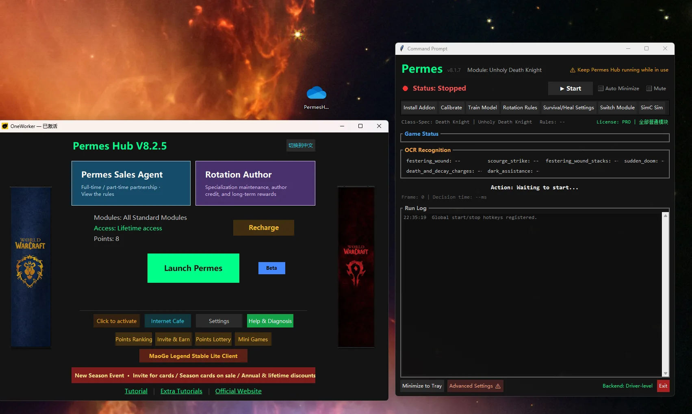
左：Permes Hub 主界面（启动 Permes、充值、设置、积分排行、邀请赚积分、积分抽奖、小游戏等入口）。右：Permes 执行端控制台（启动/停止、安装插件、校准、模型训练、输出循环等功能标签）。
完整流程：安装 Hub → 激活 → 启动执行端 → 安装游戏插件 → 进游戏设置 → 校准 →（可选）模型训练 → 开打。
PermesHub_Setup.exe。如果你使用罗技鼠标，可点击 Hub 的 GHUB 按键保护 按钮，它会自动打开 Logitech G HUB 配合按键保护。
_retail_ 文件夹（例如 D:\World of Warcraft\_retail_）——这是最常见的出错点，选错目录插件不会生效。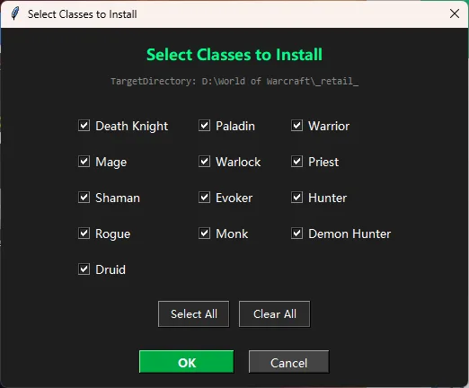
插件安装后在游戏插件列表里显示为一串随机字符名（例如 P3F8847DE），这是刻意的伪装，找不到"Permes"字样是正常的。
进游戏后第一件事：在执行端点 切换模块，选择你当前角色的职业 + 专精，点确定。
⚠ 玩什么号就选什么专精。选错专精，输出循环、按键、识别区域全都不对。
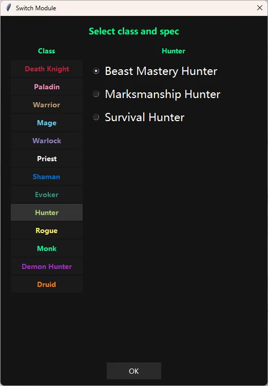
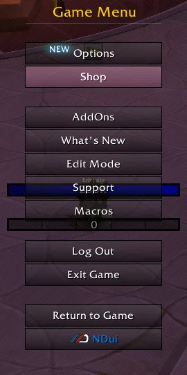
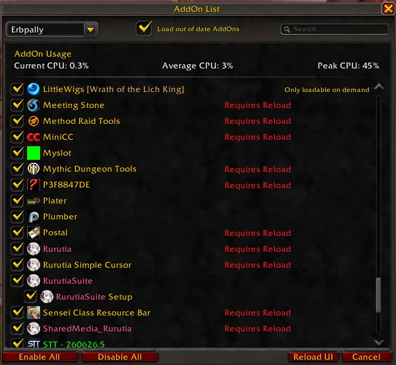
Permes 通过游戏自带的冷却管理器读取技能冷却和 Buff 层数，必须正确设置：
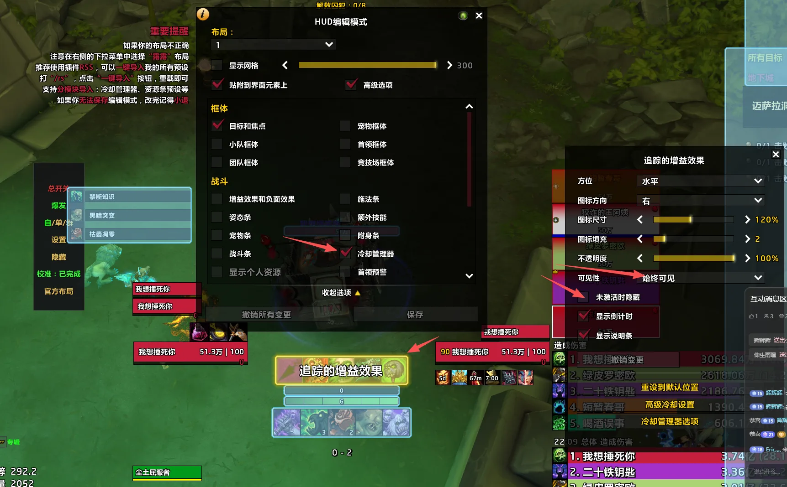
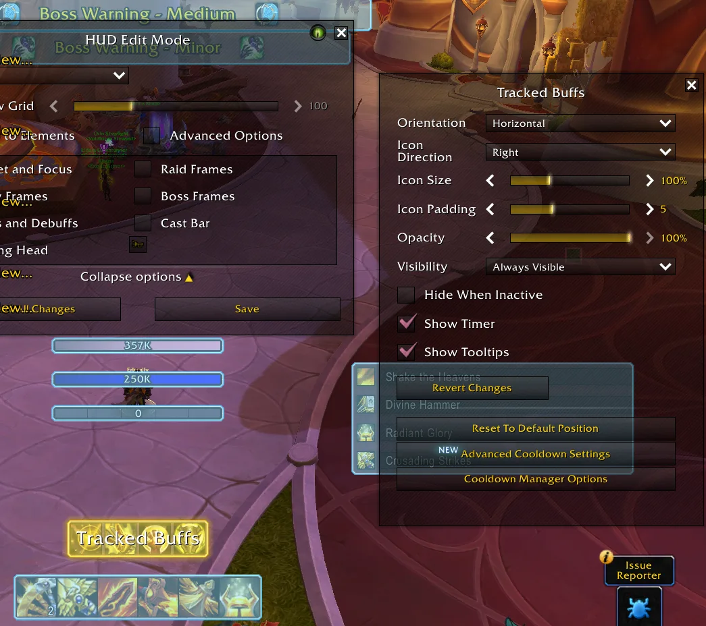
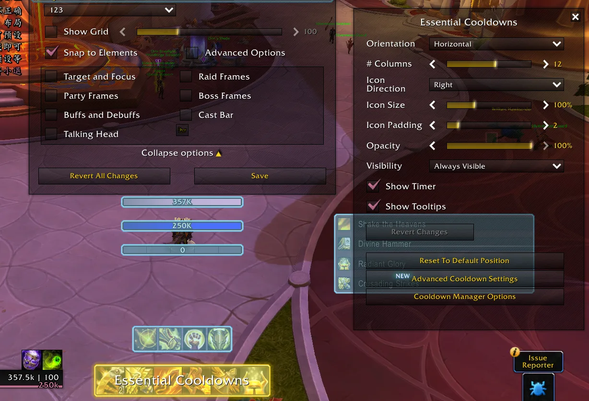
如果你的冷却管理器布局和官方要求不一致（屏幕上会弹出提示条"检测到冷却管理器缺少下列技能"）：
校准是让执行端知道"屏幕上哪个位置放着哪个数字"的过程：
已导出 5 个 ROI 坐标，请执行 /reload。/reload 重载界面——校准必须 reload 才生效。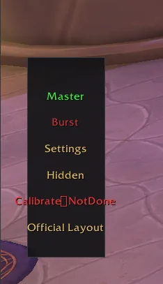
验证校准是否成功：
Permes 的数字识别模型是本地训练、本地运行的。以下情况必须自己训练一次模型：
游戏画面左侧的竖排悬浮菜单是日常操作中心：
| 菜单项 | 作用 |
|---|---|
| 总开关 | 绿=开 / 红=关。开启后 Permes 按输出循环自动按键。建议长期保持打开 |
| 爆发 | 爆发技能开关，团战/爆发期打开 |
| 自/单/群 | 模式切换：自动 / 单体 / 群体 |
| 设置 | 打开插件设置面板（见 5.2） |
| 隐藏 | 隐藏菜单 |
| 校准 | 显示校准状态，点击重新校准 |
| 官方布局 | 一键导入官方界面布局 |
① 设置页
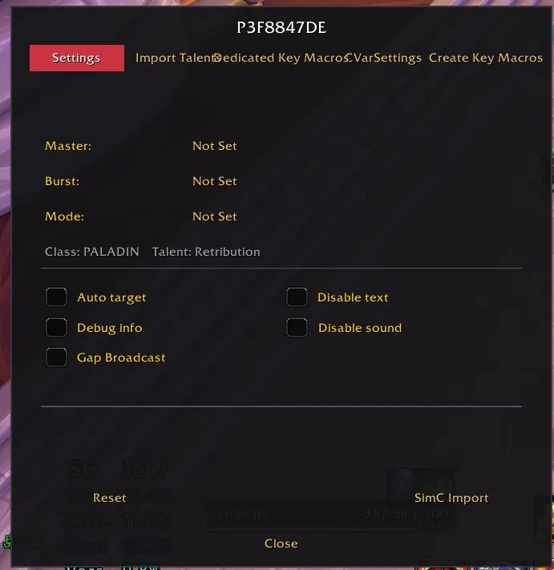
② 一键导入天赋页
列出官方推荐天赋方案（如 1 分钟爆发轴 / 30 秒爆发轴两套），选中后点 Apply 应用。
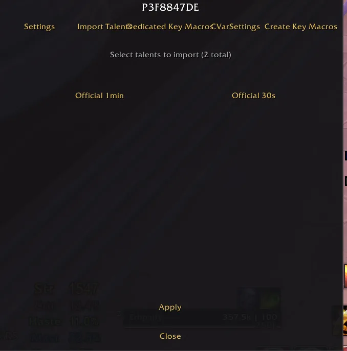
③ 专属按键宏页
当前专精每个技能的按键绑定列表，点技能右侧的 Edit 可修改。这里的按键必须与你在游戏里的实际键位一致，Permes 才能按对技能。
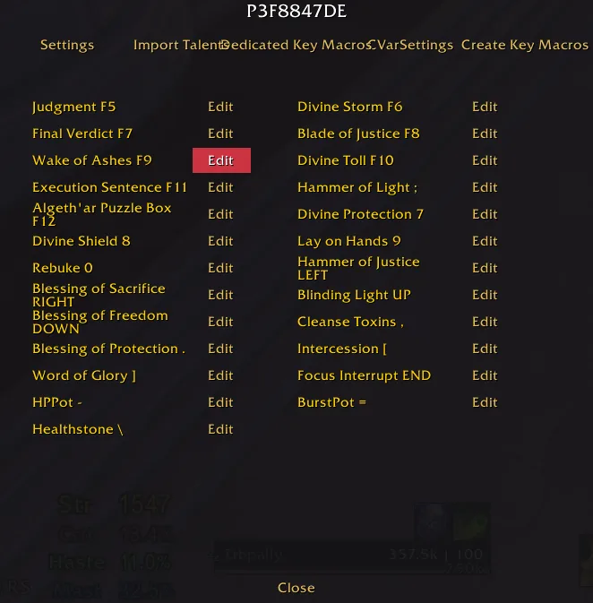
④ CVar 设置页（游戏参数优化）
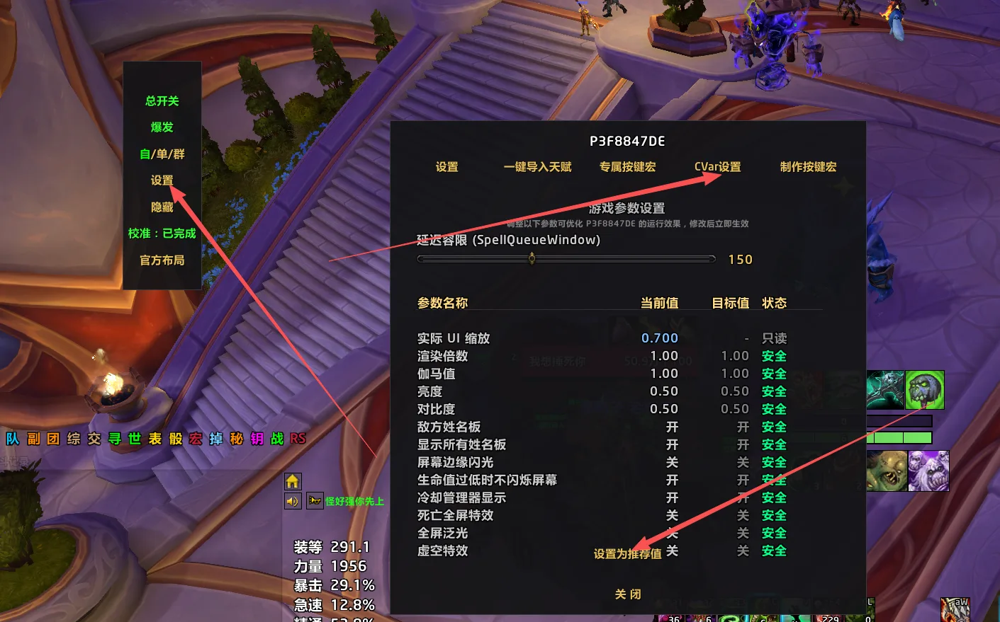
⑤ 制作按键宏页
通用宏命令，可在聊天框直接输入生效，也可复制进游戏宏、绑定按键：
| 命令 | 作用 |
|---|---|
/ON |
总开关开 |
/OFF |
总开关关 |
/bfk |
爆发开 |
/bfg |
爆发关 |
/dan |
单体模式 |
/qun |
群体模式 |
/zi |
自动模式 |
/charu |
临时关闭总开关 0.5 秒（插入手动技能用） |
/charu 典型用法——把鼠标指向类手动技能写进宏，避免和自动循环抢按键：
/charu
/cast [@mouseover,harm,exists]死亡之握;死亡之握
/charu
/cast [@player]反魔法领域
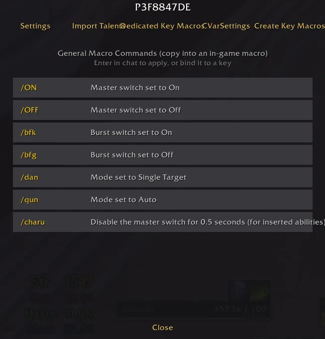
执行端 → 输出循环，左侧是"动作源"（技能→按键映射），右侧是"输出循环流水线"：
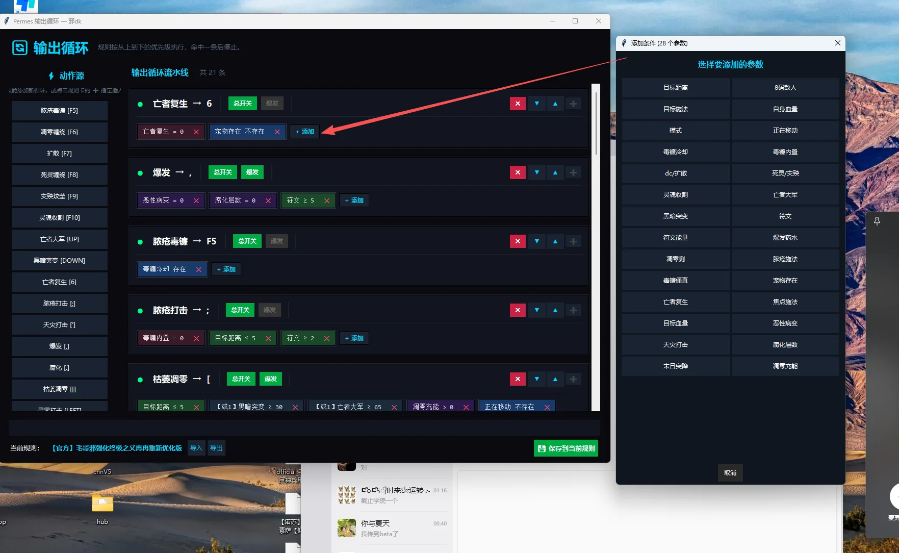
示例：给"灵界打击"添加条件 自身血量 ≤ 30% 且 符文能量 ≥ 30，即可实现低血量自动回血。
执行端 → 生存/治疗设置。所有选项默认关闭，勾选才生效：
改完点 保存。
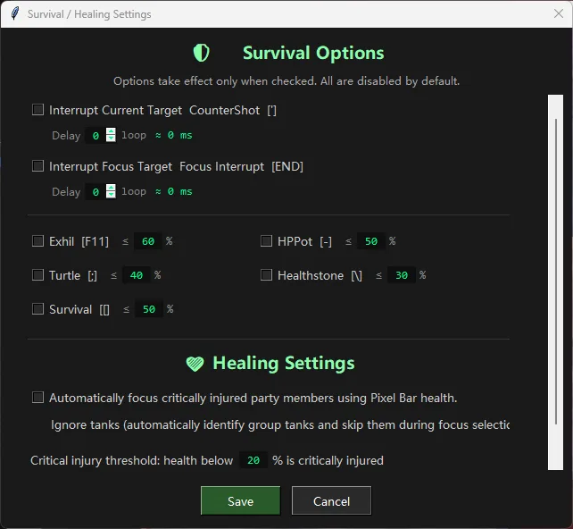
执行端 → 热键设置：全局启动热键（默认 CTRL+P，启动循环+爆发）、停止热键（默认 CTRL+O）。
/reload 保存到 SavedVariables。| 功能 | 说明 |
|---|---|
| 充值（Recharge） | 激活码续费/加购专精，支持支付宝（主备双通道）与 PayPal |
| 积分排行 | 周榜/月榜，每周一 0 点开新榜，每日 0 点结算，排名有积分奖励 |
| 邀请赚积分 | 生成邀请激活码发给新用户（需当前激活码剩余 ≥ 15 天；邀请码经客服审批后生效） |
| 积分抽奖 | 100 积分抽一次，实物奖品需填写收货地址 |
| 小游戏 | 积分解锁的小游戏与"毛哥传奇"微端下载 |
| 修改名字 | 排行榜显示名，每 30 天只能改一次 |
| AI客服小毛 | 智能问答，每小时最多 5 次提问；提问时带上完整错误提示和操作步骤，一次问清楚 |
| 帮助与诊断 | 知识库自助查询 + 问题反馈通道 |
| 优化申请 | 提交功能建议或问题，可在"我的申请记录"查看处理状态 |
| 按键保护 / 网吧专用 | 按键保护驱动与网吧环境专用模式 |
| 设置 | 界面语言（中文/English/跟随系统）等，语言切换后重启生效 |
| 教学视频 / 补充教学视频 / 官方网站 | 主界面底部链接，英文界面用户自动跳转 YouTube 教程 |
识别不准、循环不对，先过一遍这份清单，90% 的问题出在这里：
打开执行端主窗口，对照游戏实际状态检查两个区域：
哪一项对不上，问题就出在哪一项：游戏状态不对 → 校准/布局问题；OCR 数字不对 → 校准或模型问题。
已导出 5 个 ROI 坐标 后，执行 /reload。某个技能冷却好了却一直不放：
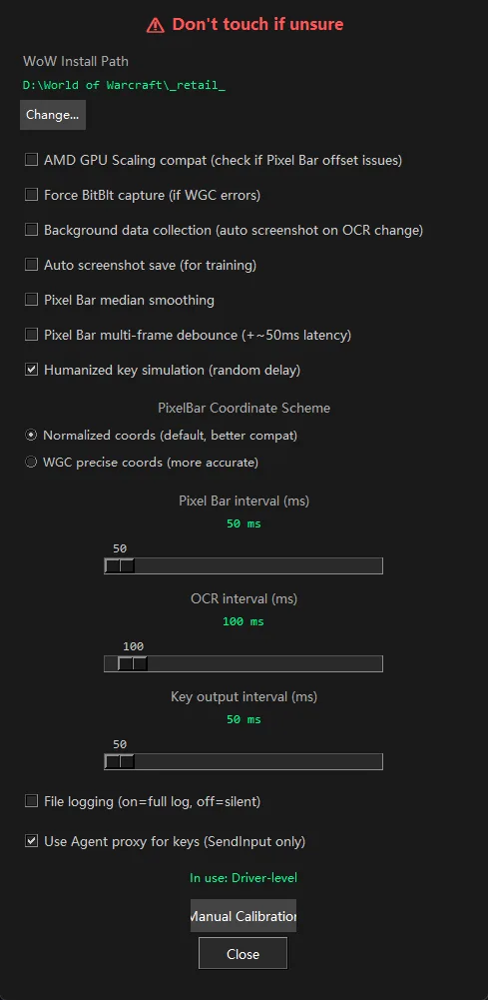
| 现象 | 原因与处理 |
|---|---|
| 插件装了但游戏里找不到 | 安装目录没指向 _retail_；插件名是随机伪装名（如 P3F8847DE），不是"Permes" |
| 进游戏插件不生效 | 插件列表勾选"加载过期插件"并 Reload UI |
OCR 数字全是 -- 或错乱 |
先过第八章检查清单，再重新校准，最后训练模型 |
| 识别出两位数 | ROI 白框框到了两个数字，调整布局使每个监控区只含一个数字 |
| Buff 数字读不到 | "追踪的增益效果"勾选了"未激活时隐藏"，取消勾选 |
| 图标突然全都不识别 | 移动过冷却管理器图标 / 改过 UI 缩放，重新导入官方布局 + 重新校准 |
| 训练完执行端自己重启 | 正常现象 |
| 执行端提示保持 Hub 运行 | Hub 被关了，重新打开 Hub |
以下整理自"帮助与诊断"知识库，按场景分类。
Q：提示"机器码不匹配"？
更换了电脑或主要硬件导致。联系客服核对并解绑旧设备，然后在当前设备重新输入原激活码。
Q：换新电脑提示"设备绑定数量已达上限"？
直接在新电脑上重新激活，系统会自动解除最旧一台设备的绑定；想保留某台旧设备，先在其他设备上退出登录；仍无法激活联系客服清理旧设备。
Q：提示"激活码不存在 / 已被使用"？
核对是否输错（多空格、字母数字混淆），确认来自官方渠道；确认无误仍提示的，联系客服核对卡密状态。
Q：提示"激活码已过期 / 已吊销 / 待审批 / 设备被封禁"？
过期 → 在 Hub 续费或重新购买；待审批（活动/邀请赠送的卡）→ 联系客服或邀请人催审批；吊销/封禁 → 联系客服核实原因。
Q：Hub 未激活 / 没有活跃 License？
在 Hub 重新输入激活码刷新授权，并把 Hub 更新到最新版本。
Q：登录状态过期 / 被登出？
检查网络后重启 Hub；确认同一激活码没有在其他设备同时运行（多点登录会互踢）。
Q：能试用吗？
试用每台设备、每个网络环境仅一次机会；当前试用功能整体暂停，请直接使用正式激活码。
Q：提示"签名无效 / 时间戳无效"，或所有功能突然全部报错？
把 Windows 系统时间设为自动同步（设置 → 时间和语言 → 自动设置时间），关闭代理/VPN，然后重启 Hub。
Q：提示"无法连接服务器 / 请求超时"？
确认能正常上网；关闭代理/VPN；把 Hub 加入防火墙和杀毒软件白名单后重启。提示"维护中"的等几分钟再试。
Q：提示"请求过于频繁"？
等一分钟左右再操作；公司/网吧等共用网络环境换手机热点试试。
Q：下载失败 / 更新包校验不通过？
直接重试让 Hub 重新获取下载链接；换网络（如手机热点）避开劫持；反复失败的，记下提示中方括号里的错误码，通过"帮助与诊断"发给客服。
Q：无法创建支付订单？
检查是否有下单未付款的订单（会占用下单额度，约 30 分钟自动过期）；已是永久授权的无需再充值；反复失败联系客服。
Q：付款后没到账？
先在支付宝/PayPal 账单确认是否真的扣款成功。已扣款：在付款页面等系统确认，一般几分钟到账，切勿重复付款；超 30 分钟未到账，联系客服并提供订单号。未扣款：重新下单即可。
Q：主支付宝失败切备用通道的提示？
主通道失败按页面提示改用备用支付宝；主订单已付款的回 Hub 等激活，不要再用备用通道付一次；状态无法确认时先查支付宝账单，切勿重复付款。
Q：PayPal 付款失败/取消？
已取消或失败的回 Hub 重新下单；已付款的回 Hub 等确认，不要重复付款。
Q：提示"无权使用该专精"或专精灰色？
未购买 → 在 Hub 加购该专精后重启 Permes；刚买过 → 重启 Hub 刷新授权。提示"模块已下架"的，更新 Permes 后重新选择模块，旧校准数据会保留。
Q：赛季卡抢购问题？
提示人数较多立刻多点几次；售罄/未开始等下一场；提示已抢购成功无需重复操作。
Q：积分不足 / 抽奖解锁失败？
通过邀请好友、参加活动攒积分；积分扣了但奖励没到账的联系客服。
Q：无法创建邀请？
当前激活码剩余有效期需 ≥ 15 天，不够先续费；邀请生成的激活码需客服审批后生效。
Q：AI 客服使用受限？
每小时最多提问 5 次，达到上限等一小时；提问带上完整错误提示和操作步骤。
Q：修改名字失败？
排行榜名字每 30 天只能修改一次。
BV1fS786wE1iBV1Jz7569E6Phttps://youtu.be/V3q6TlnII_8Hub 主界面底部有对应链接，点击可直接打开。
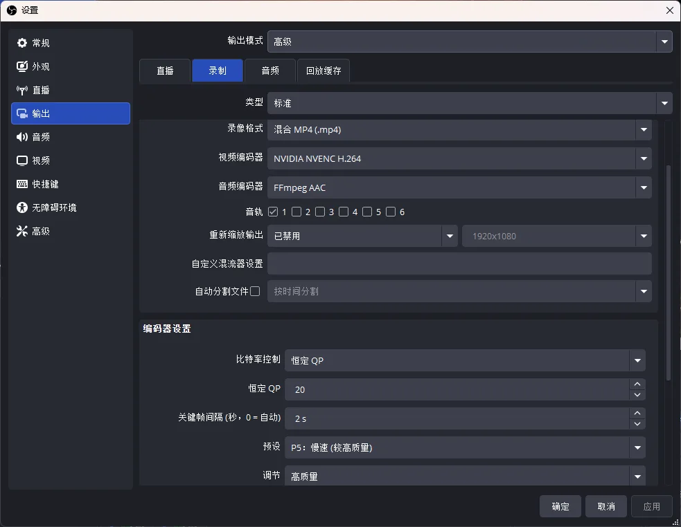
本手册由教学视频、帮助与诊断知识库整理而成。软件界面随版本更新可能略有变化，以最新版 Hub 与执行端实际界面为准。